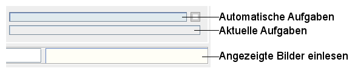

Das Programmfenster ist aufgeteilt in drei Bereiche:
Alle Befehle gelten für eine Auswahl, werden nur auf diese angewendet. Die Vorschaubilder in der Mitte können Sie mit der Maus auswählen:
Strg-Taste (Steuerung) auf ein nicht ausgewähltes Bild fügt dieses einer Auswahl hinzuStrg-Taste (Steuerung) auf ein ausgewähltes Bild entfernt dieses von einer AuswahlUmschalt-Taste (Shift) wählt die geklickten aus und alle Bilder dazwischenStrg+A alle Bilder ausDie Fortschrittsanzeigen verdeutlichen, wie viel von bestimmten Aufgaben erledigt ist. Die obere zeigt den Fortschritt automatisierter Aufgaben an, die mittlere, was Sie veranlassten und die untere, wie weit die Vorschaubilder in der Fenstermitte in die Datenbank eingelesen wurden.

Sie können in das Eingabefeld am unteren Fensterrand einen Suchtext eingeben. Nachdem Sie die Enter-Taste (Return) gedrückt haben, wird nach dem Text gesucht, den Sie eingegeben haben. Die Schaltfläche Suchen öffnen einen Dialog mit erweiterten Suchoptionen.
Die grüne Schaltfläche links von Suchen öffnet die Protokolldatei. Dies kann wichtig sein, wenn sie sich rot verfärbt: Dann verlief etwas, wie es nicht sollte.
Klicken Sie mit der rechten Maustaste, klappen manchmal Kontextmenüs auf neben dem Mauszeiger und zeigen Optionen, die für den Bereich gelten, über dem die Maus steht. Zwei Bedingungen:
Sie wählen zuerst mit der linken Taste etwas aus und klicken dann die rechte. Unten sind zwei Kontextmenüs abgebildet.